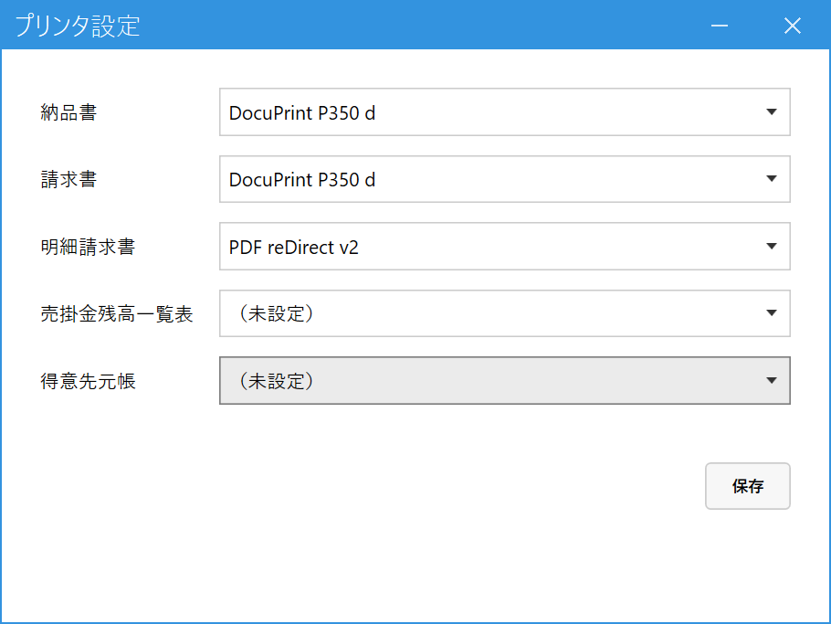

プリンタを設定する
こんなときに使います
納品書・請求書など、帳票ごとに使うプリンタを決めます。決めておくと、印刷のたびにプリンタを選ばなくて済みます（「納品書一括発行」などは、この設定のプリンタへそのまま印刷します）。
納品書・請求書など、帳票ごとに使うプリンタを決めます。決めておくと、印刷のたびにプリンタを選ばなくて済みます（「納品書一括発行」などは、この設定のプリンタへそのまま印刷します）。
この設定は、使っているパソコン（端末）ごとに保存されます。ほかのパソコンには影響しません。パソコンごとに設定してください。
1.プリンタを選んで保存する
メインメニューの「マスタ管理」の中の「プリンタ設定」を開きます。

- 納品書：売上入力・納品書一括発行・コピー機CSV取込の納品書。
- 請求書：請求締め処理の請求書。
- 明細請求書：明細請求書発行の請求書。
- 売掛金残高一覧表：月次締め処理の一覧表。
- 得意先元帳：得意先元帳の印刷。
- 保存：押さないと反映されません。
各欄をクリックすると、このパソコンで使えるプリンタの一覧が出ます。「（未設定）」のままにすると、印刷のたびに印刷ダイアログが開き、その場でプリンタを選べます。
PDFで保存したいときは、プリンタに Windows の「Microsoft Print to PDF」を選びます（この機能がパソコンで有効になっている必要があります）。